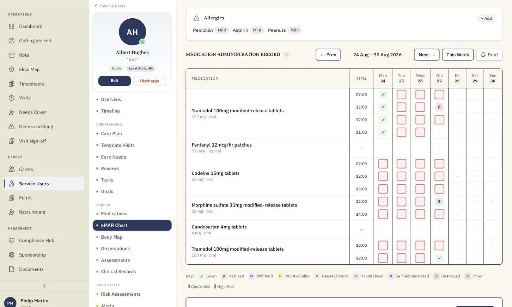
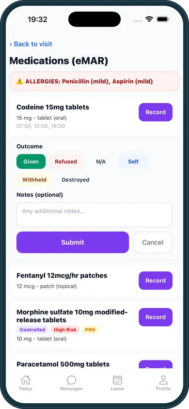

eMAR software for domiciliary care
Electronic medication administration records completed on the carer’s phone at the point of care, with a weekly MAR chart the office can read at a glance. Built for visits, not drug rounds.
Every Dose, on the Right Call, on the Record
Paper MAR charts in a folder in someone’s kitchen are where medication errors hide. homecareOS shows a carer only the doses whose times fall inside the call they are on, with the person’s allergies on the same screen. Each dose is recorded with a proper outcome code, and a saved MAR entry is never overwritten or deleted. It can be corrected, but the correction needs a written reason, records who made it and when, and keeps the original in the audit trail.

What You Get
Doses Due on This Call
Carers see the doses scheduled inside the visit they are on, not the whole list, so the right medicine is given at the right call.
Nine Outcome Codes
Refused and withheld are recorded as different events, because a person declining a dose and a carer deciding not to give it are clinically different things.
Controlled and High-Risk Flags
Controlled drugs and high-risk medicines carry their own flags and a witness field, and allergies sit on the same screen as the medication.
Corrected, Never Rewritten
Medication records can be corrected when they need to be, but every correction needs a written reason and records who made it and when. The original entry is kept, never overwritten. Every entry is timestamped and attributed to the carer who made it.
A Week on One Chart
The eMAR chart shows every round across the week. A dose that was due but never recorded is flagged in red, so managers see a pattern before it becomes a problem.
Real-World Schedules
Regular, PRN and medicines that repeat every few days, such as a weekly patch or an every-third-day dose, are all scheduled properly.

What the carer sees at the door
The medicines due on this call, the dose and instructions, and one tap to record the outcome. If there is no signal, the record is held on the phone and sent the moment a connection returns.
Included Today
Time-based rounds matched to each visit
PRN medication recording
Nine outcome codes, with refused and withheld kept separate
Controlled drug and high-risk flags with a witness field
Allergies shown alongside the medication
Medicines that repeat every N days
Optional alert when a due medication is not recorded
Weekly eMAR chart with unrecorded doses flagged
Check for medicines that no visit covers
Medication adherence and coverage reports
Recording works offline and syncs later
MAR corrections need a reason, and the original is kept
Medication cover on the new care plan builder
Shading the part of the day where a scheduled dose has no visit to cover it, right on the care plan, so a gap is fixed before the first missed dose. It is in preview with agencies now.
eMAR: your questions answered
Related Features
See the eMAR in a 15-Minute Demo
We will show you a week of medication for a real-looking service user, and what the carer sees on the doorstep. Free for your first 5 carers, with no setup fee and no minimum contract.
Compare homecareOS to your current software
See how we stack up against every major UK home care platform, feature by feature, transparent pricing, no fluff.